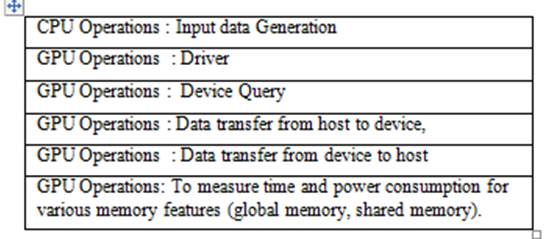
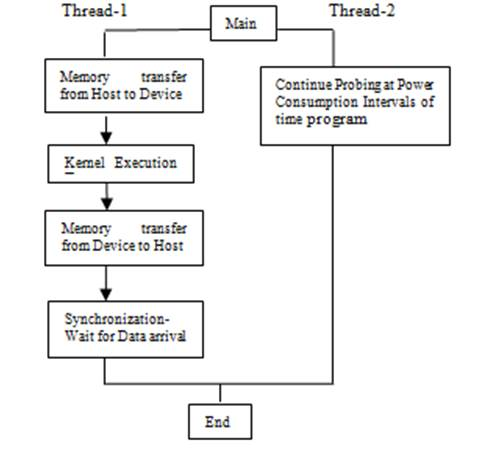

hyPACK-2013 Mode-4 : Power Management - NVML CUDA enabled NVIDIA GPU
NVIDIA's
Compute Unified Device Architecture (CUDA) is a software platform for massively parallel high-performance
computing on the company's powerful GPUs. NVIDIA's software CUDA programming model effectively use GPUs which could be harnessed for tasks other than
graphics, achieving teraflops of computing power. For high performance computing, the programming model has
been designed to improve the shaders, which is commonly used in terminology in Graphics Computing and shaders
are called as stream processing or thread processing.
|
|
CUDA Programming model automatically manages the threads and it is significantly differs from single
threaded CPU code and to some extent even the parallel code. Efficient CUDA programs exploit both
thread parallelism within a thread block and coarser block parallelism across thread blocks. Because only
threads within the same block can cooperate via shared memory and thread synchronization, programmers
must partition computation into multiple blocks.
|
|
CUDA Developer SDK
|
|
Visit
http://developer.download.nvidia.com/compute/cuda/sdk/website/samples.html
to download CUDA enabled NVIDIA programs.
Sample programs can be downloaded from
http://www.nvidia.com/object/cuda_get_samples.html
|
|
CUDA Tool Kit 4.0 for Applications : CUDA Multi-GPU Programming
|
CUDA Programming model provides two basic approaches available to execute CUDA kernels on multiple GPUs (CUDA "devices") concurrently from a single host application:
-
Use one host thread per device, since any given host thread can call cudaSetDevice() at most one time.
- Use the push/pop context functions provided by the CUDA Driver API.
Applications that require tight coupling of the various CUDA devices within a sytem, these approaches may
not be sufficent due to sychronization or communication with each other. The CUDA Runtime now provides features
in which single hos thread could easily launch work onto any devices it needed. To acommplish this, a host
thread can call
cudaSetDevice()
at any time to change the currently active device. Also, host-thread can now control more than one device.
The CUDA Driver API (Version 4.0) provides a way to access multiple devices from within a singel host thread
namely (
cuCtxPushCurrent()
cuCtxPopCurrent()). For convenience
sake, CUDA application developers can use set/get context management interface paradigm and CUDA 4.0 provides
additional features.
With this in mind,
cuCtxSetCurrent())
and
cuCtxGetCurrent())
have been added to version 4.0 of the CUDA Driver API in addition to the existing
cuCtxPushCurrent())
and
cuCtxPopCurrent())
functions.
Programming a multi-GPU application is straight forward and easy from programming an application to
utilize multiple cores or sockets because CUDA is completely orthogonal to CPU thread management
or message passing APIs. Most importantly, selecting the correct GPU, which in most cases is a
free (without a context) GPU is important. Also, identification of compute intensive portion of the existing multi-threaded
CPU code and port the code to GPU is easy without changing the inter-CPU-thread communication
code unchanged.
In order to issue work to a GPU, a context is established between a CPU
thread (or group of threads) and the GPU. Only one context can be active on a GPU at any particular instant. Similarly,
a CPU thread can have one active context at a time. A context is established during the program's first call to a function
that changes state (such as
cudaMalloc(),
etc.), so one can force the creation of a context by calling
cudaFree(0).
Note that a context is created on GPU 0 by default, unless another GPU is selected explicitly prior to context creation with a
cudaSetDevice()
call. The context is destroyed either with a
cudaDeviceReset()
call or when the controlling CPU process exits.
MPI, OpenMP, Pthreads on Host CPU (Multi-Core) & Multi-GPU :
In order to issue work to p GPUs concurrently, a program can either use p CPU threads, each with its own
context, or it can use one CPU thread that swaps among several contexts, or some combination thereof.
CPU threads can be lightweight (pthreads,
OpenMP, etc.) or heavyweight (MPI). Note that any CPU multi-threading or message-passing API or library
can be used, as CPU thread management is completely orthogonal to CUDA. For example, one can add GPU
processing to an existing MPI application by porting the compute-intensive portions of the code without
changing the communication structure. For synchronization across computations on GPUs, the host-CPU or GPUDirect
is required for communication.
Even though a GPU can execute calls from one context at a time, it can belong to multiple contexts. For example,
it is possible for several CPU threads to establish separate contexts with the same GPU (though multiple
CPU threads within the same process accessing the same GPU would normally share the same context by default).
The GPU driver manages GPU switching between the contexts, as well as partitioning memory among the contexts
(GPU memory allocated in one context cannot be accessed from another context).
In many applications, the algorithm is designed in such a way that each CPU thread (Pthreads, OpenMP, MPI)
to control a different GPU. Achieving this is straightforward if a program spawns as many lightweight threads as there are
GPUs - one can derive GPU index from thread ID.
For example, OpenMP thread ID can be readily used to select GPUs.
MPI rank can be used to choose a GPU reliably as long as all MPI processes are launched on a single host node
having GPU devices
and host configuration of CUDA programming environment.
|
|
Unified Virtual Addressing and GPUDirect 2.0 :
|
CUDA Toolkit 4.0 makes easy of programming on multi-GPU environments for NVIDIA Tesla T20-series (Fermi)
GPUs running in 64-bit mode on Linux.
Unified Virtual Addressing (UVA) allows the system memory and the one or more device memories in a system to share a single virtual address space. This allows the CUDA Driver to determine the physical memory space to which a particular pointer refers by inspection, which simplifies the APIs of functions such as cudaMemcpy(), since the application need no longer keep track of which pointers refer to which memory.
Built on top of UVA, GPUDirect v2.0 provides for direct peer-to-peer communication among the multiple devices in a system and for native MPI transfers directly from device memory.
Multi-Threaded Programming :
This has several important ramifications for multi-threaded processes and some of these are given below.
For more detail refer CUDA ToolKit 4.0 for Applications
-
Host threads can now share device memory allocations, streams, events, or any other per-context objects (as seen above).
-
Concurrent kernel execution on devices of compute capability 2.x is now possible across host threads, rather than just within a single host thread. Note that this requires the use of separate streams; unless streams are specified, the kernels will be executed sequentially on the device in the order they were launched. In all cases, kernel launch via the
<<<>>>
notation is a thread-safe operation.
-
cudaGetLastError() )
is per-host-thread: it returns the last error returned by an API call in that host thread, even if other host threads are concurrently accessing the same device
|
|
CUDA Driver APIs :
|
|
In CUDA version 4.0, a features in which multiple host threads to set a particular context current simultaneously using either
cuCtxSetCurrent()
or
cuCtxPushCurrent().
For more information refer CUDA Toolkit 4.0 for Applications.
This has several important ramifications for multi-threaded processes:
-
Host threads can now share device memory allocations, streams, events, or any other per-context objects (as seen above).
-
Concurrent kernel execution devices of compute capability 2.x is now possible across host threads, rather than just within a single host thread. Note that this requires the use of separate streams; unless streams are specified, the kernels will be executed sequentially on the device in the order they were launched
|
|
|
|
CUDA TOOLKIT Libraries
|
|
-
The CUBLAS library now supports a new API that is thread-safe and allows the application to more easily take advantage of parallelism using streams,
especially for functions with scalar return parameters. This new API allows CUBLAS to work cleanly with applications using the new multi-threading
features of CUDA Runtime 4.0. The legacy CUBLAS API is still supported, but it is not thread-safe and does not offer as many opportunities for
parallelism with streams as the new API.
-
The CURAND library now supports double precision Sobol, scrambled Sobol, log-normal distributions,
and a faster setup technique for XORWOW.
-
The CUFFT and CUBLAS library APIs now include functions that will report the library's
version number.
-
The CUSPARSE library now provides a solver for triangular sparse linear systems via the
cusparse*csrsv_analysis()
and
cusparse*csrsv_solve()
API functions.
-
The Thrust template library and the NPP image processing library are now bundled with the CUDA Toolkit, with no additional download required.
-
Some API functions in the NPP library were changed to pass results via device pointer instead of via host pointer for consistency with all of the rest of the NPP API.
|
|
|
|
NVML CUDA (Power-aware Computing) :
|
|
GPU accelerated computing systems have drawn the attention of researchers because they
have tremendous computational power and high memory bandwidth, and are inherently well
suited for massively data parallel computation. Also, the the consumption of power in milliwatts
to run the application starting stage to end of the execution is relatively in comparsion to
counter-part multi-core CPUs.
While the memory bandwidth and latency issues stall a CPU, a GPU may outperform a CPU
in these aspects. For example the memory bandwidth for modern Nvidia GPU processors is
C2075 is more than 140 GB/s. NVML is a C-based interface for monitoring and managing various states within Nvidia
Tesla GPUs NVML has several functions that can measure characteristics of GPUs, such
as device power, device temperature, unit power, unit temperature, and clock frequency.
Using NVML, we measure power and temperature.
Nvidia Management Library (NVML) high level utility called nvidia-smi not only provides
a way to measure power but also various other features like the ability to set
ECC (Error Correction Code) to zero if it is not needed, or to monitor memory usage,
among other things.

Table I. GPU operations used for measurement of Power Consumption on NVIDIA GPUs
NVML is a C-based interface for monitoring and managing various states within
Nvidia Tesla GPUs. NVML has several functions that can measure characteristics
of GPUs, such as device power, device temperature, unit power, unit temperature, and
clock frequency. Using NVML, we measure power and temperature
Nvidia Management Library (NVML) high level utility called nvidia-smi not only provides
a way to measure power but also various other features like the ability to set
ECC (Error Correction Code) to zero if it is not needed, or to monitor memory usage,
among other things. NVML can be used to measure power when running the kernel but
since nvidia-smi is a high level utility the rate of sampling power usage is very
low and unless the kernel is running for a very long time we would not notice the
change in power. NVML offers a lot of useful utilities for not only GPUs such as
C2075 but also the Nvidia Tesla C2050 GPU where one would see power in states
rather than in milliwatts. The nvmlDeviceGetPowerUsage function in the NVML
library retrieves the power usage reading for the device, in milliwatts.
This is the power draw for the entire board, including GPU, memory, etc.
The reading is accurate to within a range of +/- 5 watts error with milliwatt
precision. It is only available if power management mode is supported.
The measurement
of CPU and GPU operations have been done independently as a subroutines, indicated in table I
and an average value is considered to estimate the power using NVML library calls for important
GPU operations. Results are validated using total power-watt values for appropriate test-bed.
For system with CUDA carma system and AMD GPUs, power consumption for various GPU operations are
measured using power off meter and other low level benchmarks. On AMD APUs, the power off meter
is used to get the total power consumed for the application.
On a Message Passing Cluster, the calculation of power consumption on host and the
device such as NVIDIA GPU or AMD GPU using OpenL and CUDA is required. The calculated
power consumption out of GPU device, data transfer from host to device & device
to host, IO operations as well as initial programming environment will contribute to the total
power consumption of an application.

Figure 2. Typical Pthread Model for Calculation of Power Consumption on a system
Figure 2 explains the flow of completion of jobs in which two Pthreads are used. One thread
executes job on GPU accelerator using CUDA or OpenCL and another thread probes the power-off meter
and gathers the reported power values. Also, one thread works
on Xeon multi-coprocessor and records the power values for the entire system. On NVIDIA GPU,
we use NVML library calls with CUDA and OpenCL. Multiple threads can be used to bind multiple
accelerators and coprocessors to record the power consumed and master thread gathers the data and display on the portal. The resolution of power meter is in watts.
In the figure 2, we explore the use of the NVML library APIs to measure real-time power
consumption of BLAS kernels and PDE solver. We analyzed the performance and real-time power
consumption of two fundamental linear algebra algorithms - DGEMM and OpenMP & CUDA,
OpenCL implementation PDE Solver. The nvmlDeviceGetPowerUsage()routine exports the current
power in milliwatt resolution. The power reported is that for the entire board,
including GPU and memory.
The power analyzer electricity watt meter is also used to measure the reported power values.
The Watt's Up power meter is an external measurement device that is plugged into the
system and it provides various measurements via a USB serial connection. The power metrics
collected include average power, voltage, current, and various others. Energy can be derived
based on the average power and time. The results are system-wide and low resolution, with
updates only once a second. Limited memory exists on power-meter and hence the reported power
values for computational performed are collected. Another thread reads the data on a regular
basis, and then returns overall values when an instrumented program requests it.
|
|
CUDA Compilation, Linking and Execution of Program
|
For Compilation of CUDA program, additional steps are involved, partly because the program targets
two different processor architectures (the GPU and a host CPU), and partly because of CUDA's hardware
abstraction. Compiling a CUDA program is not as straightforward as running a C compiler to convert
source code into executable object code. The same source file mixes C/C++ code written for both the
GPU and the CPU, and special extensions and declarations identify the GPU code. The first step
is to separate the source code for each target architecture.
nvcc is a compiler driver that simplifies the process of compiling CUDA code: It
provides simple and familiar command line options and executes them by invoking
the collection of tools that implement the different compilation stages.
nvcc's basic work flow consists in separating device code from host code and
compiling the device code into a binary form or cubin object. The generated host
code is output either as C code that is left to be compiled using another tool or as
object code directly by invoking the host compiler during the last compilation stage.
CUDA code should include the cuda.h header file. On the compilation
command line, the cuda library should be specified to the linker on UNIX
and Linux environments as explained below.
1. Using command line arguments to compile CUDA source code:
The compilation and execution details of CUDA programs is simple as like compilation of C language source code.
$ nvcc -o < executable name > < name of source file >
For example to compile a simple Hello World program user can give :
$ nvcc -o helloworld cuda-helloworld.cu
Executing a Program:
To execute a CUDA Program, give the name of the executable at command prompt.
$ . / < Name of the Executable >
For example, to execute a simple HelloWorld Program, user must type:
$ ./helloworld
The output must look similar to the following:
Hello World!
|
|
Compilation and Execution :
The compilation and execution of a program to run in Offline mode is
is shown below.
# Compile to run CUDA enabled NVIDIA GPUs
make -f Makefile_CUDA_NVML
(Download Makefile
Makefile_CUDA_NVML )
# Execution on the Xeon Phi :
./run
|
|
|
|
|
|
|
Example. 1 :
Measure Power Consumption and extract maximum achieved performance for Matrix Matrix Multiplication
using CUDA enabled NVIDIA GPUs and NVML Lib. calls with Pthread Programming Env.
(Download source code :
cuda_nvml_pthreads_power_main.cu;
cuda_nvml_mat_mat_multiply_power_kernel.cu ;
cuda_nvml_measure_power.cu ;
cuda_nvml_power_kernel_functions.h;
cuda_nvml_power_kernel_define.h;
Makefile_CUDA_NVML );
Objective
Input
Description
Output
|
- Objective
Extract performance in G/flops for Matrix Matrix Multiply
and analyze the performance on Intel Xeon system with Xeon Phi Coprocessor
based on MPI-OpenMP.
- Description
Two input matrices are filled with real data and matrix-matrix Multiply
is performed and perform matrix matrix multiply on CUDA enabled GPUs.
POSIX thread programming model is used to measure Power Consumption
as well as and obtain the performance for Matrix Matrix Multiplication
using CUDA enabled NVIDIA GPUs and NVML Lib. calls with Pthread Programming Env.
The Pthread programming on Xeon Host and offload computation of
matrix-matrix multiply on GPU. The other thread obtains the
power consumption in Milli-watts as per calculations performed using
NVML power APIs at periodic intervals of time.
In implementation,
The input matrices are generated on the Host-CPU. In simple algorithm, the input matrix is partitoned as
per Grid of thread blocks. Each thread reads one row of the matrix and performs computation with one column of
the another matrix and compute the correspodning elements of resultant marix on Device-GPU. The resultant matrix is
transferred back to Host-CPU. The application developer implements standard algorithm with approriate choice
of threading blocks of CUDA enabled NVIDIA GPUs are used for Matrix Matrix Multiplication algorithm.
NVML APIs such as
nvmlInit();
nvmlDevice_t device;
nvmlReturn_t result;
nvmlDeviceGetHandleByIndex(GPUDevId , &device);
nvmlDeviceGetPowerUsage( device, &p );
are used in this code.
- Input
Number of threads, Size of the Matrices.
- Output
Prints the reported Power Consumption in Milliwatts, Achieved Giaflops and the
time taken for computation of Output matrix and CUDA enabled NVIDIA GPU information
|
|
|
|
|
|
|
Example. 2 :
Measure Power Consumption and extract maximum achieved performance for Matrix Matrix Multiplication
using CUBLAS Lib. of CUDA enabled NVIDIA GPUs and NVML Lib. calls with Pthread Programming Env.
(Download source code :
cublas_nvml_pthreads_power_main.cu;
cublas_nvml_mat_mat_multiply_power_kernel.cu ;
cublas_nvml_measure_power.cu ;
cublas_nvml_power_kernel_functions.h;
cublas_nvml_power_kernel_define.h;
Makefile_CUBLAS_NVML );
Objective
Input
Description
Output
|
- Objective
Extract performance in G/flops for Matrix Matrix Multiply
and analyze the performance on Intel Xeon system with Xeon Phi Coprocessor
based on MPI-OpenMP.
- Description
Two input matrices are filled with real data and matrix-matrix Multiply
is performed and perform matrix matrix multiply on CUDA enabled GPUs.
POSIX thread programming model is used to measure Power Consumption
as well as and obtain the performance for Matrix Matrix Multiplication
using CUDA enabled NVIDIA GPUs and NVML Lib. calls with Pthread Programming Env.
The Pthread programming on Xeon Host and offload computation of
matrix-matrix multiply on GPU. The other thread obtains the
power consumption in Milli-watts as per calculations performed using
NVML power APIs at periodic intervals of time.
In implementation,
The input matrices are generated on the Host-CPU. In simple algorithm, the input matrix is partitoned as
per Grid of thread blocks. Each thread reads one row of the matrix and performs computation with one column of
the another matrix and compute the correspodning elements of resultant marix on Device-GPU. The resultant matrix is
transferred back to Host-CPU. The CUBLAS3 library call performs computation on the Device-GPU.
NVML APIs such as
nvmlInit();
nvmlDevice_t device;
nvmlReturn_t result;
nvmlDeviceGetHandleByIndex(GPUDevId , &device);
nvmlDeviceGetPowerUsage( device, &p );
are used in this code.
- Input
Number of threads, Size of the Matrices.
- Output
Prints the reported Power Consumption in Milliwatts, Achieved Giaflops and the
time taken for computation of Output matrix and CUDA enabled NVIDIA GPU information
|
|
|
|
Compilation and Execution :
The compilation and execution of a program to run in Offline mode is
is shown below.
# Compile to run CUDA enabled NVIDIA GPUs
make -f Makefile_CUDA_NVML
(Download Makefile
Makefile_CUBLAS_NVML )
# Execution on the Xeon Phi :
./run
|
|
|
|
|
|
|
Example. 3 :
Measure Power Consumption for Device Query Operation on GPUs
(Download source code :
cuda_dev_query_nvml_pthreads_power_main.cu;
cuda_dev_query_nvml_power_kernel.cu ;
cuda_dev_query_nvml_measure_power.cu ;
cuda_dev_query_nvml_power_kernel_functions.h;
cuda_dev_query_nvml_power_kernel_define.h;
Makefile_DeviceQuery_NVML );
Objective
Input
Description
Output
|
- Objective
Power Consumption for Device Query
- Description
The CUDA programming paradigm consists of a host
and one or more devices. The host manages the memory
and execution of the devices.
CUDA program consists of host code that runs on the
host, and kernelcode that runs on the device.
The CUDA cudaDeviceProp struct has a wealth of information as
given below.
CUDA Device Properties can be obtained by calling cudaGetDeviceProperties.
The program that prints out the number of CUDA devices and the name of the current CUDA device
CUDA Device Query operation (RUntime API) gives information such as CUDA Driver
version, CUDA Runtime Version, CUDA Capability Major & Minor revision,
Total amount of local memory, Number of Multi-processors, Number of Cores,
Total amount of constant and shared memory per block, total number of
registers available per block, warp size, maximum number of thread per
block, Maximum number of threads per block, Maximum sizes of each dimension of a block,
Maximum sizes of each dimension of a grid, Maximum memory pitch,Texture alignment,
& Clock rate.
If a CUDA-capable device and the CUDA Driver are installed but deviceQueryreports
that no CUDA-capable devices are present, ensure the deivce and driver are properly
installed.
POSIX thread programming model is used to measure Power Consumption
as well as and obtain the performance for Matrix Matrix Multiplication
using CUDA enabled NVIDIA GPUs and NVML Lib. calls with Pthread Programming Env.
The Pthread programming on Xeon Host and offload the device query operation
on GPU. The other thread obtains the
power consumption in Milli-watts as per calculations performed using
NVML power APIs at periodic intervals of time.
In implementation, NVML APIs such as
nvmlInit();
nvmlDevice_t device;
nvmlReturn_t result;
nvmlDeviceGetHandleByIndex(GPUDevId , &device);
nvmlDeviceGetPowerUsage( device, &p );
are used in this code.
- Input
None
- Output
Prints the reported Power Consumption in Milliwatts, Achieved Giaflops and the
time taken for computation of Output matrix and CUDA enabled NVIDIA GPU information
|
|
|
|
|
|
|
Example. 4 :
Measure Power Consumption for Bandwdith on GPUs
(Download source code :
cuda_bandwidth_nvml_pthreads_power_main.cu;
cuda_bandwidth_nvml_power_kernel.cu ;
cuda_bandwidth_nvml_measure_power.cu ;
cuda_bandwidth_nvml_power_kernel_functions.h;
cuda_bandwidth_nvml_power_kernel_define.h;
Makefile_bandwidth_NVML );
Objective
Description
Output
|
- Objective
Power Consumption for Bandwidth Test
- Description
The CUDA programming paradigm consists of a host and one or more devices. The host
manages the memory and execution of the devices.
CUDA BandwidthTest program gives Host to Device, Device to Host and Device to Device
bandwidth using Pinned memory transfers.
The device name and the bandwidth numbers vary from system to system.
The important items are the second line, which confirms a CUDA device was found, and also
confirms that all necessary tests passed.
If a CUDA-capable device and the CUDA Driver are installed but deviceQueryreports
that no CUDA-capable devices are present, ensure the deivce and driver are properly
installed.
POSIX thread programming model is used to measure Power Consumption
as well as and obtain the performance for Matrix Matrix Multiplication
using CUDA enabled NVIDIA GPUs and NVML Lib. calls with Pthread Programming Env.
The Pthread programming on Xeon Host and offload the device query operation
on GPU. The other thread obtains the
power consumption in Milli-watts as per calculations performed using
NVML power APIs at periodic intervals of time.
In implementation, NVML APIs such as
nvmlInit();
nvmlDevice_t device;
nvmlReturn_t result;
nvmlDeviceGetHandleByIndex(GPUDevId , &device);
nvmlDeviceGetPowerUsage( device, &p );
are used in this code.
- Input
None
- Output
Prints the reported Power Consumption in Milliwatts, Achieved Giaflops and the
time taken for computation of Output matrix and CUDA enabled NVIDIA GPU information
|
|
|
|
|
|
|
Example. 5 :
Measure Power Consumption for global memory access of floating point computations.
(Download source code :
cuda_globalmemory_nvml_pthreads_power_main.cu;
cuda_globalmemory_nvml_power_kernel.cu ;
cuda_globalmemory_nvml_measure_power.cu ;
cuda_globalmemory_nvml_power_kernel_functions.h;
cuda_globalmemory_nvml_power_kernel_define.h;
Makefile_cuda_globalmemory_NVML );
Download source code (WinRAR ZIP Archive) ;
CUDA NVML POWER Coalesced Memory (WinRAR ZIP archive)
Download source code (WinRAR ZIP Archive) ;
CUDA NVML POWER Shared Memory (WinRAR ZIP archive)
Objective
Description
Output
|
- Objective
Power Consumption for CUDA globalmemory Test
- Description
The CUDA programming paradigm consists of a host and
one or more devices. The host manages the memory and execution of the devices.
CUDA\A0uses\A0a\A0segmented\A0memory\A0architecture\A0that\A0allows applications\A0to\A0access\A0data\A0in\A0global,\A0local,\A0
shared,\A0constant,\A0and\A0texture\A0memory. On GPUs, the memory
operations from global memory are not only very time consuming but also power
consuming.
GPU uses a single SM, the power should remain the same, and power scales with
respect to the number of SMs used.
Global memory is used to allocate or copy data between the host and device
(GPU). Bandwidth between host and device memory is very low compared to data
transfer within the GPU, therefore communication between host and device should
be minimized. There is an overhead per communication, so single large transfers
are better than many small transfers.
Global memory is located in the main device memory, and data accesses from
the SM to global memory are high latency (400-800 clock cycle) and low bandwidth
(compared to on chip memory).
The latency can be hidden to some extent if there are a large number of active threads.
Access to global memory from the SM can be
improved using coalescing. We use these rules to show power consumed by coalesced
memory.
Registers are associated with each SM and give the fastest access. Registers can
store scalars and built-in vector types. Arrays indexed by constant values known at
compile time typically reside in registers.
On CUDA enabled NVIDIA GPUs, the size of the registers do not exceed 32
K since 32 K is the register space allocated per SM. Register spilling is very costly as
it may result in data being placed in local memory rather than registers.
A floating point benchmark based on Taylor's thorem for Numerical Linear Algebra (NLA)
kernel is considered for development of benchmarks.
Shared memory, which is software managed cache, is on chip memory which has high
bandwidth and low latency. It can be used for thread cooperation as this memory is
shared between all threads within a block. Shared memory is divided into successive
equal sized banks, i.e. 32 x 32-bit for C2075, that can be accessed simultaneously.
Shared memory can be as fast as the registers if bank con
icts are avoided. Multiple
requests to the same bank result in serialization unless all threads read the same
address.
Coalesced Memory : Since access to global memory is via 32, 64, or 128 byte accesses,
the benchmarks can be desined in such a way each thread can access it in a regular
pattern of 128 bytes.
Coalesced memory accesses are very important for instruction throughput. The local
and global variables use global memory.
If memory accesses to global memory which are not regular patterns to global memory
are called noncoalesced accesses.
The Pthread programming on Xeon Host and offload the device query operation
on GPU. The other thread obtains the power consumption in Milli-watts as per
calculations performed using NVML power APIs at periodic intervals of time.
In implementation, NVML APIs such as
nvmlInit();
nvmlDevice_t device;
nvmlReturn_t result;
nvmlDeviceGetHandleByIndex(GPUDevId , &device);
nvmlDeviceGetPowerUsage(device, &p );
are used in this code.
- Input
None
- Output
CUDA globalmemory\A0\A0prints\A0performance results.\A0
|
|
|
|
|
|
|
NVML CUDA (Power-aware Computing) Codes
|
Test Programs & Benchmarks using NVML :
-
Power Watt Consumption : Memory Bandwidth; Asynchronous and Overlapping Transfers with Computation;
-
Power Watt Consumption :
Global and Shared Memory Implementation - Memory Intensive Benchmark
-
Power Watt Consumption :
Floating Point Benchmark - Coalesced Access to Global Memory;
Floating Point Benchmark - Global and Shared Memory using CUBLAS library call - DGEMM;
User Developed Codes for NLA Kernels
-
Power Consumption : Stream Benchmark; Open source software - MAGMA, Apps - String Search
Alg.; Poisson Equation Solver
|
-
CUDA Device Query on Single and Multi-GPU : Power Watt Consumption
(Download source code :
device-query-power-measurement.cu )
-
Power-Watt Consumption : Check for Power Consumption on each device with driver
and without driver
-
Power Watt Consumption : Memory Check, & Memory Bandwidth
-
Power Watt Consumption : Asynchronous and Overlapping Transfers with Computation
-
Global and Shared Memory Implementation - Memory Intensive Benchmark
-
Floating Point Benchmark - Coalesced Access to Global Memory
-
Floating Point Benchmark - Global and Shared Memory using CUBLAS library call - DGEMM
-
Open Source Benchmark Stream Execution - Performance on each GPU
(Download source code (WinRAR ZIP Archive):
power-demo-gpu-work-Stream.zip )
-
SAXPY implementations in CUDA C and Thrust
-
Write your own program to measure the total power consumption and performance for
different problem sizes for implementation of PDE solver using
Finite Difference Method (FDM) based on MPI & CUDA framework.
-
Application Kernels : Implementation of Poisson Equation solver - CUDA Implementation
-
Application Kernels : Implementation of String Search Algorithms - CUDA Implementation
-
Write your own program for NLA kernel codes and measure the power consumption and performance
(turn around time & throughput) of Benchmark.
-
Write your own program for NLA kernel codes and measure the power consumption and performance
(turn around time & throughput) of Benchmark using CUBLAS Library.
|
|
1.
|
NVIDIA Kepler Architecture
|
|
2.
|
NVIDIA CUDA toolkit 5.0 Preview Release April 2012
|
|
3.
|
NVIDIA Developer Zone
|
|
4.
|
RDMA for NVIDIA GPUDirect coming in CUDA 5.0 Preview Release, April 2012
|
|
5.
|
NVIDIA CUDA C Programmig Guide Version 4.2 dated 4/16/2012 (April 2012)
|
|
6.
|
Dynamic Parallelism in CUDA Tesla K20 Kepler GPUs - Prelease of NVIDIA CUDA 5.0
|
|
7.
|
NVIDIA Developer ZONE - CUDA Downloads CUDA TOOLKIT 4.2
|
|
8.
|
NVIDIA Developer ZONE - GPUDirect
|
|
9.
|
OpenACC - NVIDIA
|
|
10.
|
Nsight, Eclipse Edition Pre-release of CUDA 5.0, April 2012
|
|
11.
|
NVIDIA OpenCL Programming Guide for the CUDA Architecture version 4.0 Feb, 2011 (2/14,2011)
|
|
12.
|
Optmization : NVIDIA OpenCL Best Practices Guide Version 1.0 Feb 2011
|
|
13.
|
NVIDIA OpenCL JumpStart Guide - Technical Brief
|
|
14.
|
NVIDA CUDA C BEST PRACTICES GUIDE (Design Guide) V4.0, May 2011
|
|
15.
|
NVIDA CUDA C Programming Guide Version V4.0, May 2011 (5/6/2011)
|
|
16.
|
NVIDIA GPU Computing SDK
|
|
17.
|
Apple : Snowleopard - OpenCL
|
|
18.
|
The OpenCL Specification, Version 1.1, Published by Khronos OpenCL
Working Group, Aaftab Munshi (ed.), 2010.
|
|
19.
|
The OpenCL Speciifcation Version : v1.0 Khronos OpenCL Working Group
|
|
20.
|
Khronos V1.0 Introduction and Overview, June 2010
|
|
21.
|
The OpenCL 1.1 Quick Reference card.
|
|
22.
|
OpenCL 1.2 (pdf file)
|
|
23.
|
OpenCL 1.1 Specification (Revision 44) June 1, 2011
|
|
24.
|
OpenCL Reference Pages
|
|
25.
|
MATLAB
|
|
26.
|
NVIDIA - CUDA MATLAB Acceleration
|
|
27.
|
CUDA BY EXAMPLE - An Introduction to General Purpose GPU Programnming,
Jason Sanders, Edward Kandrot (Foreword by Jack Dongarra),
Addison Wessely 2011, nvidia
|
|
28.
|
Programming Massievely Parallel Processors - A Hands-on Approach,
David B Kirk, Wen-mei W. Hwu
nvidia corporation, 2010, Elsevier, Morgan Kaufmann Publishers, 2011
|
|
29.
|
OpenCL Toolbox for MATLAB
|
|
30.
|
NAG
|
|
31.
|
OpenCL Progrmamin Guide,
Aftab Munshi Benedict R Gaster, timothy F Mattson, James Fung,
Dan Cinsburg, Addision Wesley, Pearson Education, 2012
|
|
32.
|
The OpenCL 1.2 Specification Khronos OpenCL Working Group
|
|
33.
|
The OpenCL 1.2 Quick-reference-card ; Khronos OpenCL Working Group
|
|
|
|
|